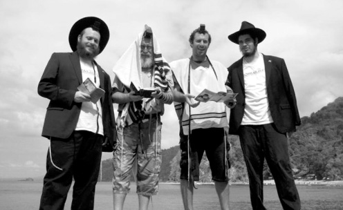

Bringing Moshiach to the Land of the Orient Pearl
A glimpse into the life of a shlucha who arrived at her shlichus on the very day that the shluchim in Bombay were murdered. * Even in the faraway Philippine Islands, the Rebbe is chai v’kayam.

I called Mrs. Tiferes Levy, the shlucha in the Philippines, and reached her as she was escorting guests. The time over there was 9:30 at night, so I suppose that there are people there – more than enough too. The government announced a weekly “Sabbath” for various types of vehicles; every day – a different kind of vehicle cannot be driven. Why? Because there are too many vehicles on the road and traffic tie-ups cause high blood pressure. The Philippines is one of the most populated countries in the world.
READY, SET, GO!
Did you know what the Philippines are before you arrived there?
The truth is that neither I, nor my husband, knew anything about it. My husband knew about Filipinos, because they are foreign workers in Eretz Yisroel, and I knew about them from history lessons. There was a time when the Philippines were under American rule. Aside from that, we knew nothing about the place.
When we first looked into it, we discovered a large country with many things, from factories to some of the most advanced hospitals in the world. There was just one thing missing there, a Chabad house. Today, nearly four years later, another couple joined us a month ago, R’ Yisroel and Mushky Kaplan. They are an hour’s flight away from us. In another two months, we are expecting another couple.
What’s it like to be “Nachshons?”
My husband, Yossi, always wanted it to be this way. As a bachur, he dreamed about a new shlichus that was far away and challenging. He had helped a shliach to start a new Chabad house and wanted to do this on his own. I too was in the mindset of shlichus. My mother has been teaching for thirty years, twenty of those years in a Chabad school in Florida. Ever since I was little, I’ve breathed chinuch, working with children, and shlichus. As a young girl I helped out at a few Chabad houses, and those experiences help me a lot in running our own Chabad house now.
Unlike my husband, I wasn’t planning on going so far away. I thought we would live somewhere in the US or New York, where I was born. It’s so much more convenient as far as being near family, having access to kosher food, etc. In the Philippines, there was nothing. During the first half a year here, we had no meat at all. In order to have milk, we had to go and watch the milking.
So why did you go to the Philippines?
“It’s a long story,” Tiferes hesitated, but after I said I like long stories, she decided to give me a synopsis of what happened:
We lived in New York the first year of our marriage. My husband learned for smicha and worked in a yeshiva. I worked as a teacher. At the end of the school year, which was shortly after the end of our first year of marriage, they asked me at the school whether I planned on coming back.
This was a good time for my husband and me to sit down and discuss our future. At first, we thought we should continue doing what we were doing, learning and working, and go on shlichus later, but then we decided that instead of deciding on our own we would write to the Rebbe.
We wrote and opened to an amazing letter. The Rebbe wrote that there are many people in chinuch, especially in Brooklyn, and he recommended that we go far away and open a new Chabad house.
We didn’t need a clearer answer than that. I told the school that I was going on shlichus and would not be coming back. At this point, we had no idea where we were going.
That same week, the word “Philippines” came up time and again. We heard that a few people were traveling there on business; we heard about people who had visited there; and when we went to a family wedding in Florida the local shliach said to my husband, “What about the Philippines? There is no Chabad house there. Maybe you can do something about it …”
So you did something!
We started. My husband began fundraising and we reported to the Rebbe. The Rebbe’s letter said that opening a new Chabad house near Australia is the best memorial for the writer of the letter. Aside from the fact that the Philippines is located above Australia, that night was my father-in-law’s first yahrtzait.
Wow!
Yes, the Rebbe simply pushed us to go there and this helped us a lot later on. We went to the Philippines after the Kinus HaShluchim 5768/2007. The flight was from New York to Hong Kong and from Hong Kong to the Philippines. When we arrived in Hong Kong and looked at the computer, we saw the initial reports about the tragedy playing out in Bombay. When we landed in the Philippines, it was the day the Holtzbergs were murdered. Under other circumstances, we might have been frightened and fled – the Philippines are right in that area, near Thailand and Japan, but we knew that the Rebbe wanted us there and the encouragement we got from him pushed us to unpack and start looking for a suitable place for a Chabad house that would make our future guests feel safe.
How many Jews are there in the Philippines?
Many. At the moment, we know of 600 Jews, but we are constantly meeting new people. Two weeks ago, for example, my husband was walking down the street (on a day that he was not allowed to use his car) and suddenly, out of nowhere, he heard someone say, “Yechi HaMelech.” He turned around and saw an Israeli. My husband got into a conversation with him, asking who he was and where he knew that phrase from. The fellow said he was from Florida, and it turned out that we have many common acquaintances, so we became friends within half a second. He sat in our house from five in the afternoon until one at night.
During tourist season in the Philippines, about 15,000 people visit. That’s when we have many opportunities to meet new people. The special thing about our Chabad house is that we keep in touch with everyone, even after they leave us. Recently, a businessman came to spend Shabbos with us. He had been in Thailand and didn’t want to miss out on the Shabbos atmosphere in the Philippines.
What sort of programs do you do?
We will be moving shortly to a building that will contain all our programs. It will have a mikva, a preschool, a restaurant, a shul … The preschool and restaurant are new projects we are working on. As of now, we are in a neighborhood that is zoned for residents only. We chose it because of the feeling of security. Since we can’t run a restaurant here, we set up a sort of take-out option with home cooked food. I consider food as being very important. Through food, you reach people’s hearts.
We once had a fellow here who came every Shabbos. He traveled throughout the week and would come back to us for Shabbos. He did this for nearly two months. Each time he would walk into the kitchen just to inhale the smells and be reminded of home. When I saw this, I was moved. Since then, I try to prepare a variety of food, as much as possible considering what I have to work with, so that whoever comes here at my table will be reminded of home.
As for a preschool, there are 50-60 Jewish children here, so we have a solid base for a school. It will open for the new school year. We run a day camp twice a year and aside from that we have programs for women. Women work a lot here, so our programs are relaxed with art and conversations over coffee. There are also the less pleasant aspects such as a Jew in the local jail who died and we dealt with his burial.
How do you get along with your non-Jewish neighbors?
It’s impressive that the goyim are more certain about Moshiach than we are. First of all, they are very aware of the Bible and our being the Chosen People. Whenever they encounter us, they remind us that we are the Chosen People. Numerous distinguished and older people come to the Chabad house and want to help us. I had an entire staff of volunteers for Pesach.
I mentioned the tourist season before. During the other seasons of the year there are torrential rains. Three years ago, right before Yom Kippur, there was a serious storm. At the end of the block, people were swimming. Two story houses were completely submerged, and it was nearly dry here. They all said that the reason our block remained dry is because there is a holy house here.
Aside from that, we work very hard on the Seven Noachide Laws. We have a class once a week on the topic and people keep asking for more. There was a Filipino who was very serious about this. He has a command of Chassidic concepts that is better than a lot of people I know. One day, he happened to attend a lecture where they spoke against Chabad and Moshiach and he got up and announced that he had once kept Shabbos but then he understood this is not for him. His role, he announced to the surprised audience, is to help Chabad shluchim, because he knows that the Rebbe is the Messiah. When he finished what he had to say, he began singing Yechi.
Does it make an impression on others that the Filipinos are ready to welcome Moshiach?
Definitely. I see it all the time, on the non-Jews and on the tourists, who are open to hearing about it, and mainly with the children. At the last day camp we ran, we spoke about Moshiach. We showed pictures of the Rebbe to the children and described what will happen, and the children accepted it.
A few days later, on Rosh Chodesh Kislev, I gave birth and we invited the children to say Shma with the baby. The shliach, R’ Yehuda Friedman, came to us from New York for the bris. One of the girls came into the house, saw him, and began shouting, “Moshiach arrived!” She saw a white beard and Chassidic dress and was sure it was him.
I consider the children as shluchim more than myself.
What do you mean?
Children have a special way of saying things. There’s no fooling around. They can go over to people and say or do things that we wouldn’t dare say or do. My children were born to shlichus and they love it. I try to give them a good time and not to talk all day about what’s hard, painful or upsetting and they accept it beautifully. When we looked for a new building, for example, they were more excited than we were. My oldest, who is three and a half, urged us to write to the Rebbe.
Where do you see the Rebbe in your shlichus?
What?! The Rebbe is everything! He is the only one who makes things happen here and we see this constantly. For example, there was a couple who came from Eretz Yisroel. He is a kibbutznik, a Kohen, 60-70 years old. She is a divorcee. They spent years together but when they came here, the Kohen latched on to Chassidus. He sat for hours with my husband, came to all the t’fillos, learned Chitas, and was enthusiastic about everything Jewish. She was very upset. She had come here to tour, and instead of touring with her he was sitting in the synagogue from morning till night. This caused them to separate.
It sounds simple, but it’s huge. They had lived together for years, in a relationship that is forbidden for him and her. There was no chance of their separating, and yet the Rebbe ensured that we wouldn’t even have to expend energy on explanations about the forbidden relationship between a Kohen and a divorcee.
We consult with the Rebbe about everything. For example, before my first birth which was Purim time, I wanted to return to the US and be near my mother and have a midwife who experienced something like 12,000 births. But the Rebbe’s letter said that on Purim there would be many people at the Chabad house and from this I understood that I should stay here.
With my second child the Rebbe also wrote to stay and not to worry. With this birth, I had the midwife I wanted. She was in India and was willing to “pass my way” on her way home. I gave birth on her last night here and it was a quick, good birth and Boruch Hashem worry-free, as the Rebbe had promised.
We see the Rebbe’s guiding hand in the numbers of people which constantly change. Sometimes we have many people, several minyanim a day, and sometimes we have less. It’s nice to see how sometimes there is the power of the group, and other times, the one-on-one relationship is effective. It’s amazing!
Readers are invited to contribute towards the Chabad house of the Philippines at www.chabadph.mycharitybox.com
Rochel Green. "Bringing Moshiach to the Land of the Orient Pearl." Beis Moshiach, no. 851 (September 28, 2012).